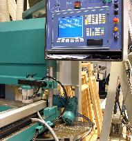

A staircase is a major focus point in any property. Properly designed and integrated it can enhance the presentation of any building, large or small. The staircase manufacturing industry has not adapted in many areas to modern day clients needs. A client's choice is often limited to using a large manufacturer who lacks flexibility of approach and may quote long delivery periods or engaging a general joinery shop who do not embrace current stair production technology and equipment and have other client commitments at the same time.

London Stairs, a division of The London Joinery Co Ltd., has a fully fitted workshop with modern CNC cutting and machining equipment and therefore services the needs of clients for whom competive prices with short delivery periods are a necessity.